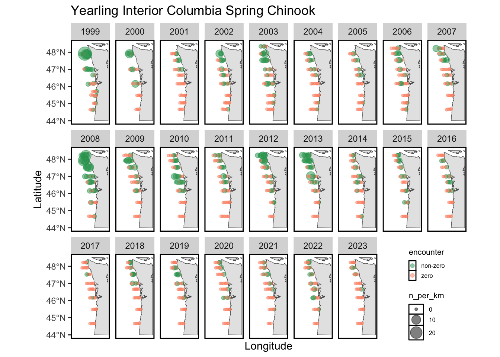
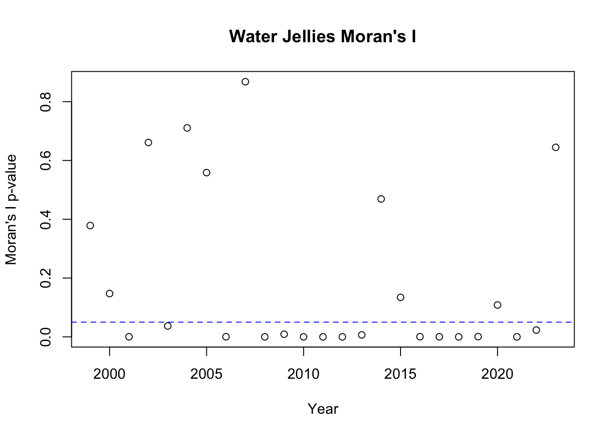

This page contains exploratory analysis for the trawl data from JSOES.
We will first explore the most common and most abundant taxa in this dataset.
| species | mean_n_per_km | sd_n_per_km |
|---|---|---|
| sea_nettle | 44.5 | 268.7 |
| water_jelly | 41.6 | 243.8 |
| california_market_squid | 15.3 | 91.8 |
| coho_salmon_yearling | 2.4 | 5.6 |
| sablefish | 2.0 | 24.8 |
| chum_salmon_juvenile | 1.2 | 5.1 |
| chinook_salmon_subyearling_interior_fa | 0.7 | 2.4 |
| moon_jelly | 0.5 | 9.2 |
| chinook_salmon_subyearling_scg_f | 0.4 | 4.0 |
| chinook_salmon_yearling_interior_fa | 0.3 | 0.8 |
| species | n | prop_samples |
|---|---|---|
| coho_salmon_yearling | 712 | 0.55 |
| water_jelly | 707 | 0.55 |
| california_market_squid | 491 | 0.38 |
| sea_nettle | 486 | 0.38 |
| chinook_salmon_yearling_interior_fa | 432 | 0.33 |
| chum_salmon_juvenile | 393 | 0.30 |
| chinook_salmon_yearling_interior_sp | 321 | 0.25 |
| chinook_salmon_mixed_age_juvenile | 319 | 0.25 |
| chinook_salmon_subyearling_interior_fa | 312 | 0.24 |
| wolf_eel | 231 | 0.18 |
This Shiny app can be used to explore the abundances of different taxa across the full length of the time series. In this Shiny app, I take the mean log density across the survey region to create a simple index of abundance.
I am currently developing a Shiny app that will allow you to visualize the distributions of different taxa. For now, I provide static maps of four focal taxa for this survey:

Before fitting any spatiotemporal models, we must explore the spatial and temporal autocorrelation in the data.
We can first inspect the autocorrelation in our four focal taxa, at the scale of the full survey region:
None of the four taxa investigated here show temporal autocorrelation.
I also investigated temporal autocorrelation at the scale of individual stations, and found little evidence for temporal autocorrelation at this scale for these four taxa.
To investigate spatial autocorrelation, I calculated a metric known as Moran’s I. Moran’s I is a measure of the overall clustering of the spatial data and tests if there is support to reject the null hypothesis of no spatial structure. Given that we did not see much evidence for temporal autocorrelation, I calculated Moran’s I separately for each year. To summarize the Moran’s I results, I show the p-value for Moran’s I for each year, with the blue dashed line showing a p-value of 0.05.

Based on the Moran’s I results, we see that there is evidence for spatial clustering in some years but not others. There are also notably more years where the Moran’s I value is significant for these taxa than there are for the two copepod species examined in the JSOES Bongo exploratory analysis.